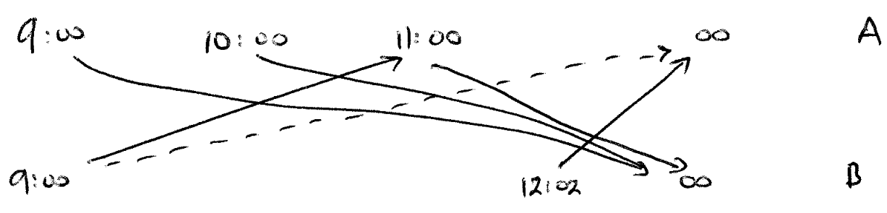
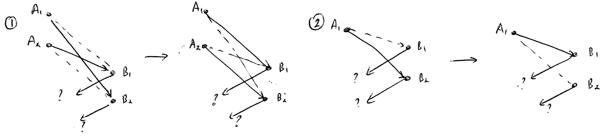

Posted on 31st March 2015
I was hoping to take part in Google Code Jam this year, but for much of Saturday the 11th I'll be transatlantic, flying back from Boston to Leeds, and I'm not sure I fancy my chances so much with jet-lag, no sleep, and much reduced amount of time...
But anyway, I thought it would be fun to look at past problems, and also to try to solve them in C#, as a way of learning more about the language. I must say that I've found it useful to solve the problems in Python-- it's nice having an iterative environment, and Python is generally fast enough.
So, here are my thoughts on the 2008 Qual round. See my code on GitHub.
Official problem. Given S search engine names, and the Q queries: need to assign each query, in the order they arrive, to a search engine different to the query name. Return the minimal number of times a new search engine is needed.
Example: Names are A, B, C and queries are A B A B B B A then all can be sent to C, so answer is 0
Example: Names are A, B and queries are A A A B B A. Then we use the search engines B B B A A B so 2 changes are needed.
Thoughts: It feels like a greedy algorithm should work, but does it? Let's label the search engines 0, 1, 2 and so on. The problem is to split the input into segments where we can send all the requests to the same search engine: the only constraint is that the used engine must not be in the requests. Suppose we have segments A0 using engine k0, then A1 using engine k1, and so on. How can we "improve" this? Well, we can make A0 bigger (and A1 smaller) so long as the queries in A0 don't use all the search engines (so we still have some choice for k0). So we may as well assume we've expanded A0 as much as possible: thus A0 either contains all the queries, or it's maximal, so it contains all but one of search engines, and the next query is that unused search engine.
We can then continue this: now choose A1 maximal, and so on.
So the solution is to scan over the input, keeping a list of all the "used" search engines, and once we have used all engines, we start again (with the final query as the new starting query) and increase our "change count". A little care is required with the case when we've used all the queries.
The official answer is similar.
Official problem. We have trains timetabled to travel between stations A and B. Once a train (say) travels from A to B, after a "turnaround" time, it is now free to travel from B to A, and in this way, two or more timetabled journeys may be completed by one train. Find the minimal numbers of trains needed to start from A and from B to carry out all the timetabled journeys.
Some thought required here. Form a bipartite graph where there is a vertex for each start time from station A or B (and, if you like, two extra vertices representing "infinity" at A and B). Consider the vertices in order by time (so the earliest vertices come first). Then link vertices Ai and Bj, say, if the train starting at Ai will be free to take the journey starting at Bj (that is, taking account of turnaround time, will be train be free?) Link all the A vertices to B-infinity, and vice versa. So we end up with a directed graph, and we want to find the minimal number of paths which touch all the vertices. The example timetable has trains A->B at times 9->12, 10->13, 11->12:30 and B->A at times 12:02->15, 9->10:30. As the turnaround time is 5 minutes, the 9->12 trains is too late to form the 12:02->15 train. However, the 9->10:30 train can form the 11->12:30 train so we have an edge from B9:00 to A11:00. We get this graph:  Here arranged left to right instead of up to down. Hence the solution is start 2 trains off at A and B.
I don't think any "standard" algorithms can help here. However, again let us think about a "greedy" solution, and iteratively "improving" (or not making worse) a solution which we have.
Suppose we have some solution, that is, some collection of paths, and let us think of two "moves" which we can perform: 
The Offical solution uses a Heap instead. To me, it's not 100% obvious that a greedy strategy is optimal.
Official problem This is long, and geometric, so refer to the Google Code Jam page for details.